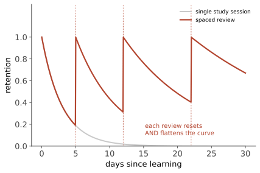

认知 III · 记忆
记忆不是录像回放，而是每次回忆都在重建。本页给三样东西：记忆的系统结构、学习科学最扎实的实用结论（本站对你最有直接价值的一页）、以及虚假记忆——"我记得很清楚"恰恰不是可靠性的证据。
1. 三阶段与多系统
编码 → 存储 → 提取，任一环节出错都表现为"忘了"。
经典多存储模型（Atkinson–Shiffrin）：感觉记忆（图像记忆约 0.5 s、声像记忆约 3 s）→ 短时/工作记忆 → 长时记忆。
工作记忆（Baddeley 模型取代了被动的"短时记忆"）：中央执行 + 语音回路 + 视空模板 + 情景缓冲——它是主动操作台而不是货架。容量：经典说法 \(7\pm2\)（Miller），当代估计约 4 个组块（Cowan）——组块化（chunking）是扩容的唯一途径（象棋大师记棋局强于新手，但记随机摆放的棋子并不强——专长是组块的胜利，不是"记忆力"的胜利【稳】）。
长时记忆的分类【稳，H.M. 案例的双重分离为证】：
| 类型 | 内容 | 神经底物 |
|---|---|---|
| 陈述性/外显：情景（个人经历）+ 语义（事实） | 能说出来 | 海马 + 皮层 |
| 非陈述性/内隐：程序性（骑车）、启动、条件反射 | 说不出但会做 | 基底神经节、小脑、杏仁核 |
2. 遗忘与巩固
Ebbinghaus 遗忘曲线【稳，且是心理学最古老的定量发现之一】：遗忘先快后慢，近似对数形状。

遗忘的四种机制：编码失败（多数"忘记"其实从未学会——你能画出硬币的正面吗）、存储衰退、干扰（前摄/倒摄）、提取失败（舌尖现象——信息在，钥匙丢了）。
巩固【稳】：新记忆需要时间稳定（睡眠是主战场，第 06 页）；再巩固：每次提取都会让记忆重新变得可塑——这既是记忆可被修改的漏洞，也是创伤记忆治疗的机会窗（第 17 页）。
提取线索：编码特异性原则、情境依赖与状态依赖记忆【摇：实验室可见，日常效应量小于流行说法】。
3. 实用结论（本页最值钱的部分）
【稳】提取练习效应（testing effect）：自测比重读有效得多——且效应在延迟测验上更大。读三遍不如读一遍自测两遍。 【稳】间隔效应：同样的总时长，分散优于集中；间隔随掌握度递增（Anki 的算法就在做这件事）。 【稳】交错练习：混合不同类型题目优于按类型分块——练习时感觉更差、考试时表现更好。 【稳】生成效应与自我解释：自己生成答案/解释给别人听，优于被动接收（🔗 ai 站第 12 讲的费曼技巧在此有实证支撑）。
共同的元教训——流畅性错觉：感觉轻松的学习方法（重读、看讲解视频、划重点）几乎都是低效的；感觉吃力的方法（自测、间隔、交错）才有效。这是学习科学与直觉最强烈的一次对撞，也是"提示词/工具再好，费力思考不可替代"的心理学版本。
记忆术：位置法（记忆宫殿）、关键词法、首字母——它们对无意义材料极其有效，对理解型学习帮助有限（理解本身才是最好的编码）。
4. 虚假记忆：本页的警告
记忆是重建的【稳，且是心理学对司法最重要的贡献】：
- DRM 范式：给"床、休息、醒、疲倦…"一串词，多数人会"记得"看过从未出现的"睡觉"——虚假记忆在实验室里几分钟就能造出来；
- 误导信息效应（Loftus）：车祸录像后，问"两车相撞（smashed）时车速多少"比"接触（contacted）"给出更高估计，且更多人"记得"看到了并不存在的碎玻璃；
- 富植入记忆：通过暗示与家人配合，相当比例的被试会"回忆"起童年商场走失等从未发生的事件；
- 闪光灯记忆：重大事件的记忆自信极高但准确性随时间下降与普通记忆相当——自信与准确的相关很弱。
后果：目击者证词是冤案的首要来源之一（美国 Innocence Project 的 DNA 平反案例中占绝大多数）；"恢复的被压抑记忆"在 1990 年代造成大量冤案——当代主流认为在暗示性治疗中"恢复"的童年创伤记忆极不可靠【倒】（真实创伤当然存在且常被清晰记得，这与"被压抑后恢复"是两回事）。
给自己的推论：你对自己过往的记忆同样在被反复重写；重要的事情写下来，别信"我记得很清楚"（🔗 与你 Medusa 预测层"口头需求不落 spec 必蒸发"是同一条经验的心理学根据）。
5. 反直觉清单
- 照相式记忆基本不存在【倒】（儿童的遗觉象罕见且不稳定；超常记忆者多为技巧 + 练习，如世界记忆锦标赛选手）；
- 少数超忆症（HSAM）个体确实存在，但他们的优势限于自传体事件、且伴随强迫倾向——记得住不等于活得好；
- 睡前学习 + 充足睡眠 > 熬夜多学两小时（巩固比编码更稀缺）。
记住了不等于会用。下一页：思维、判断与决策——人类推理的系统性偏差，以及它们为什么不是"笨"。